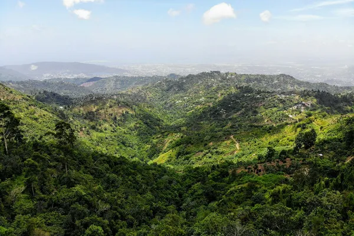

Jamaica: Jamaican rum

Photo: Yves Alarie on Unsplash
Jamaica is famous for bold, funky pot-still rums rich in flavour compounds called esters, known locally as 'hogo'.
How it's made
Long fermentations, often with dunder from previous distillations, and pot stills create the high-ester style. Jamaica Rum is a protected name.
Rum is made from molasses, often with long fermentations using wild yeasts, spent wash (dunder) and aged 'muck' that create fruity esters. It is distilled in double-retort pot stills, which give heavy, flavourful rum, and in column stills for lighter styles.
History
Rum has been made on Jamaica's sugar plantations since the 1600s, built on the labour of enslaved Africans. Jamaican rum later became a staple of the British Royal Navy and of the London rum trade.
Ageing and label terms
Rum ages fast in the tropical heat, with more lost to evaporation each year than in Europe. An age statement gives the age of the youngest rum in the bottle; unaged white overproof rum is also hugely popular locally.
Styles
Funky, high-ester pot-still rums (Hampden, Long Pond), rounder blends (Appleton Estate) and white overproof rum. Distilleries name their rum 'marks' by ester level.
Rules and protected names
Jamaica Rum is a protected geographical indication: it must be made from sugar cane on the island using local water, and sweeteners and flavourings are not allowed.
How to serve and classic cocktails
Neat or with water for aged rums. Classic cocktails: Mai Tai, Planter's Punch and Daiquiri.
With food
Jerk chicken, curry goat, spicy patties, grilled pork and banana desserts.
Good to know
Ester levels are measured in grams per hectolitre of pure alcohol, and the most intense marks are mostly used to add flavour to blends rather than drunk on their own.
Producers
- Appleton Estate
- Hampden Estate
- Worthy Park
- Wray & Nephew
Bottles to try
Appleton Estate Signature
Orange peel, molasses, brown sugar and gentle Jamaican funk.
Serve: In a rum punch or with ginger beer
Wray & Nephew White Overproof Rum
Fierce and fruity: banana, pineapple, molasses and Jamaican funk.
Strength: 63% · Age and cask: Unaged
Jamaica's best-selling rum and a fixture of local life, made by J. Wray & Nephew, who also own Appleton Estate. Very strong, so always dilute or mix it.
Serve: Mixed: with ginger beer, or in rum punch
Hampden Estate 8 Year Old
Very fruity: overripe banana, pineapple, varnish and spice.
Strength: 46% · Age and cask: 8 years, ex-bourbon casks, aged in Jamaica
Hampden in Trelawny is famous for high-ester rum made with long, wild fermentations and double-retort pot stills. Aged in the Jamaican heat and bottled without added sugar or colouring.
Serve: Neat, or in a Mai Tai or rum punch
Smith & Cross Traditional Jamaica Rum
Bold and funky: overripe banana, pineapple, molasses, clove and tar.
Strength: 57% (Navy strength) · Age and cask: Blend of young aged rums, oak casks
Pure pot-still rum from Hampden Estate, a distillery famous for long fermentations that create intense fruity esters. Bottled at Navy strength, so a little goes a long way in cocktails.
Serve: In a Mai Tai, Jungle Bird or punch, in small amounts
Appleton Estate 12 Year Old Rare Casks
Orange peel, cocoa, molasses, toasted oak and warm tropical fruit.
Strength: 43% · Age and cask: 12 years, ex-bourbon casks
A blend of pot and column still rums from the Nassau Valley estate, aged in Jamaica's tropical heat. The estate's long-time master blender Joy Spence was the first woman named master blender in the spirits industry.
Serve: Neat, over a large ice cube, or in a Rum Old Fashioned
Worthy Park Single Estate Reserve
Ripe banana, pineapple, coffee, chocolate and a funky, spicy finish.
Strength: 45% · Age and cask: Aged in ex-bourbon barrels
Worthy Park grows its own cane, makes its own molasses and distils in pot stills on one estate in Lluidas Vale, St Catherine, where sugar has been produced since the 1700s. Rum making there restarted in 2005 after a long break.
Serve: Neat, with a cube of ice, or in a rum Old Fashioned
Appleton Estate 8 Year Old Reserve
Warm and fruity: orange peel, cocoa, molasses, vanilla and a touch of nutmeg.
Strength: 43% · Age and cask: At least 8 years in ex-bourbon American oak, aged in Jamaica
A blend of pot and column still rums from the Appleton Estate in the Nassau Valley, all aged in Jamaica's tropical heat. It is blended under Joy Spence, the first woman to become master blender in the spirits industry.
Serve: On ice, or in a Mai Tai or Old Fashioned
Hampden Estate Rum Fire
Explosive and funky: overripe banana, pineapple, nail varnish and molasses.
Strength: 63% · Age and cask: Unaged
A white overproof rum from Hampden in Trelawny, made in pot stills from molasses fermented slowly with wild yeasts. This gives the very high levels of fruity esters Jamaican rum is famous for.
Serve: A splash in tiki drinks or a Daiquiri, never neat at full strength
Myers's Original Dark Rum
Rich and dark: molasses, treacle, coffee, dried fruit and spice.
Strength: 40% · Age and cask: Blend of aged Jamaican rums, no age statement
The brand was started in Jamaica in 1879 by Fred L. Myers. It is a dark, full-bodied blend made for mixing, and a classic base for Planter's Punch.
Serve: In a Planter's Punch, a Dark 'n' Stormy or with cola
More rum & cane regions
Explore all spirits in the interactive guide
The Wine Reference newsletter
New wines, stories and career guides, one email a week at most.
Over 18s only. Unsubscribe any time with one click. Your email is stored securely by Kit and never shared.
Support The Wine Reference
This guide is free, with no paywall. If it helped you choose a bottle, you can buy me a glass and keep it growing.
🍷 Buy me a glass